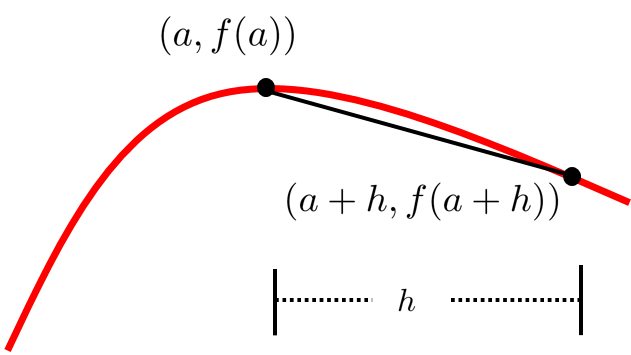
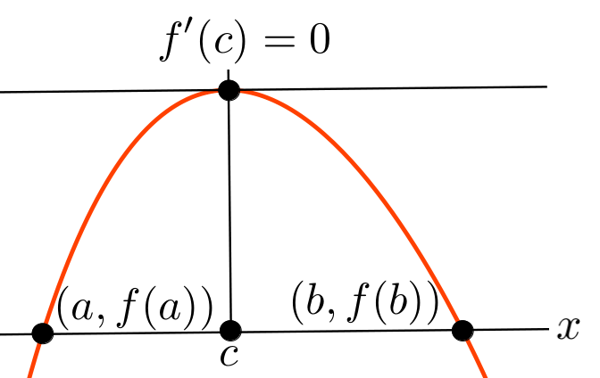
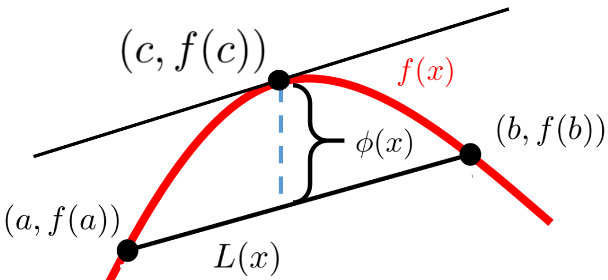

Geometry has always been considered as an exact science, and indeed as the source of the exactness which is widespread among other parts of mathematics. . . But it seems that this feature of exactness does not reign anymore in geometry since the new system of infinitely small quantities has been mixed to it. I do not see that this system has produced anything for the truth and it would seem to me that it often conceals mistakes.
Assuming that all of the properties of limits we talked about in Section 14.1 can be proved, we have seen that all of the differentiation rules we developed intuitively using differentials in Chapter 4 can be made rigorous using limits.
The question we need to address now is this: Does the need for rigor, which prompted our definition of the derivative 13.4), get in the way of practical applications such as, say, the First Derivative Test? We will show that such a practical result can still be achieved while maintaining rigor. To do this, we will need a theorem that allows us to relate instantaneous changes to finite changes. The French name for this theorem is “le théorème des accroissements finis” (translated literally as “the Theorem of Finite Increments”). In English it is called the the Mean Value Theorem. We will see how this powerful theorem can be used to transition from theoretical to practical.
Section15.1Fermat’s Theorem
It is by logic that we prove, but by intuition that we discover.
It is actually a little surprising how much effort it takes to prove the First Derivative Test. We will start by proving some preliminary results that will make it a little easier to follow the logic behind the proof of the First Derivative Test. We’ll begin with (Fermat’s Theorem 9.1) which says that if \(f\) attains a maximum (or minimum) at \(x=a\) then \(f^\prime(a)=0.\) More formally:
Theorem15.1.Fermat’s Theorem.
If \(f(a)\) is a local extremum (either a maximum or a minimum) of \(f(x)\) at \(x=a\text{,}\) and \(f(x)\) is differentiable at \(x=a\) then \(f^\prime(a)=0\text{.}\)
Recall that Fermat’gs Theorem does not say that if \(f^\prime(a)=0\) then \(f(a)\) is an extremum. In fact, we know that this is not true. Rather, it states the converse: If we know that \(f(a)\) is an extremum and \(f^\prime(a)\) exists, then \(f^\prime(a) =0\text{.}\)
It is very rare that we can develop a proof of a theorem by directly writing down the logical steps in order. Usually the process takes a lot of trying, backtracking, trying again, and so on much as we described in our analogy in Chapter 2 about finding your way out of a forest.
Of course, in a textbook it is not practical to list all of the bad ideas we might have just to see that they are, in fact, bad ideas. So we will use the following Scrapwork construct when we are just “thinking about” a problem. The scrapwork is not the proof. The purpose of scrapwork is to engage our intuition and to begin organizing our intuitive understanding so that a rigorous proof will emerge. So, not every statement we make inside a scrapwork construct will necessarily be fully rigorous. If you see a gap in the logic inside a scrapwork construct watch to see how it gets filled in the proof.
Scrapwork15.1.
Notice that in Definition 13.4 the quantity \(\frac{f(a+h)-f(a)}{h}\) is the slope of a particular secant line, as in the sketch below.

If \((a,f(a))\) is a (local) maximum then the slope of the secant line in our diagram, \(\frac{f(a+h)-f(a)}{h}\text{,}\) must be negative when \(h\gt 0\text{.}\) Since the slope is less than zero it follows that
Draw a similar diagram to convince yourself that \(f^\prime(a)\) must also be greater than or equal to zero when \(h\lt 0\text{.}\)
We can now rigorously prove Fermat’s Theorem.
Proof of Fermat’s Theorem.
We will only prove the case when \(f(a)\) is a local maximum. The case of a local minimum is very similar. Since \(f(a)\) is a local maximum there is an interval containing \(a\) such that for any \(h\) (sufficiently small that \(a+h\) is also in the interval), \(f(a+h)\leq f(a)\text{.}\) Thus \(f(a+h)-f(a)\leq0\) as seen in the sketch above. If \(h\lt0\) then \(\frac{f(a+h)-f(a)}{h}\geq 0\) and so
The only way that inequalities in Formulas (15.1) and (15.2)) can be both true is if \(f^\prime(a)=0.\)
Problem15.3.
Use our proof of the maximum case (Proof 15.1.1) of Fermat’s Theorem 15.1 as a guide to constructing a proof of Fermat’s Theorem when \(f(a)\) is a local minimum.
Section15.2Rolle’s Lemma and the Mean Value Theorem
might be horrified to know that his lemma has become a fundamental part of the modern development of Calculus. Like Bishop Berkeley, he was an early critic of Calculus, having once described it as a “collection of ingenious fallacies.”
Lemma15.5.Rolle’s Lemma.
Suppose \(f\) is continuous on the closed interval \([a,b]\) and differentiable on the open interval \((a,b)\text{.}\) Suppose further that \(f(a)=f(b)\text{.}\) Then there is at least one number \(c\text{,}\) in the interval \((a,b)\) such that \(f^\prime(c)=0\text{.}\)

When Rolle’s Lemma is visualized, as in the sketch above, it is clear what is going on. If \(f(a)=f(b)\) then between the points \((a,f(a))\) and \((b,f(b))\) the graph of \(f(x)\) will either rise to a maximum or drop to a minimum (not shown) at some point \(c\text{.}\) In either case, by Fermat’s Theorem, the derivative of \(f\) at \(c\) will be zero. Notice that the slope of the line through \((a,f(a))\) and \((b,f(b))\) is also zero. Thus these two lines are parallel.
Despite the clarity of our sketch, an analytic proof is still required because our sketch does not capture all of the possible ways that Rolle’s Lemma can manifest. This is demonstrated in Problem 15.6 below.
Problem15.6.
Sketch the graph of a function (different from the one in our sketch) which satisfies all of the conditions of Rolle’s Lemma and convince yourself that the conclusion of Rolle’s Lemma must still be true.
Show that the condition that \(f\) is continuous on \([a,b]\) is necessary by sketching the graph of a function which violates only that condition and the conclusion of Rolle’s Lemma.
Show that the condition that \(f\) is differentiable on \((a,b)\) is necessary by sketching the graph of a function which violates only that condition and the conclusion of Rolle’s Lemma.
Proof of Roll’s Lemma.
By the Extreme Value Theorem 9.59 there are points \(\alpha\) and \(\beta\) in the interval \([a,b]\text{,}\) such that \(f(\alpha)\) is a global maximum, and \(f(\beta)\) is a global minimum. There are two possibilities for \(\alpha\) and \(\beta\text{:}\)
Case 1:
Both \(\alpha\) and \(\beta\) are endpoints of the interval.
In this case since \(f(a)=f(b)\) the global maximum and the global minimum are equal. The only way that can happen is if the function is constant on the interval \([a,b]\text{,}\) and if \(f\) is constant then \(f^\prime(x)=0\) for every \(x\) in the interval \((a,b)\text{.}\) So we take \(c\) to be any point in \((a,b)\text{.}\)
Case 2:
At least one of \(\alpha\) or \(\beta\) is not an endpoint of the interval.
In this case by Fermat’s Theorem, either \(f^\prime(\alpha)=0\text{,}\) or \(f^\prime(\beta)=0\text{.}\) So we take \(c=\alpha\) or \(c=\beta\) as appropriate.
In either case the existence of \(c\) in the interval \((a,b)\text{,}\) with \(f^\prime(c)=0\) is guaranteed.
Digression: Theorems and Lemmas.
The distinction between a theorem and a lemma is very slight and rather arbitrary. Typically we call a statement a theorem if it is important and requires proof. We call it a lemma if it requires proof itself, and is used to simplify the proof of a theorem. This is not a hard-and-fast rule by any means. Sometimes we first prove a lemma as an aid to proving a theorem, only to find that the lemma is actually more important. However, having been originally dubbed a lemma the result is known ever after as a lemma. For example, in the present instance we will be using the Extreme Value, and Fermat’s Theorems to prove what often called Rolle’s Lemma, and then use use Rolle’s Lemma to prove the Mean Value Theorem. Then we will use the Mean Value Theorem to prove the First Derivative Test. It is all very chaotic.
END OF DIGRESSION
Theorem15.7.The Mean Value Theorem.
Suppose \(f(x)\) is continuous on some closed interval, \([a,b]\text{,}\) and \(f\) is differentiable on \((a,b)\text{.}\) Then there is at least one number \(c\) in the open interval \((a,b)\) such that
The Mean Value Theorem (visualized in Figure 15.8 below) says that there is a point \(c\text{,}\) in the interval \((a,b)\) such that the tangent line at \(c\) and the line through \((a,f(a)\) and \((b,f(b))\) are parallel. Thus in the special case where \(f(a)=f(b)\) the Mean Value Theorem reduces to Rolle’s Lemma. In other words the Mean Value Theorem is a generalization of Rolle’s Lemma.

Figure15.8.
We said we would use Rolle’s Lemma to prove the Mean Value Theorem. To do that we’ll need to create a function -- we’ll call it \(\phi(x)\) -- that satisfies all of the conditions of Rolle’s Lemma. If \(L(x)\) is the function whose graph is the line through \((a,f(a)\) and \((b,f(b))\) we see that
satisfies all of the conditions of Rolle’s Lemma 15.5. Therefore, by Rolle’s Lemma there is a point \(c\text{,}\) between \(a\) and \(b\) such that \(\phi^\prime(c)=0\text{.}\) Therefore
As we mentioned at the beginning of this chapter in French the Mean Value Theorem is known as the théorème des accroissements finis, literally the “theorem of the finite increments.”
To see why this is an accurate description let \(y=f(x)\text{.}\) Then \(f(b)-f(a) = \Delta y\) and \(b-a=\Delta x\text{.}\) So we can re-express equation (15.3)) as \(\Delta y=f^\prime(c)\Delta x\text{.}\) In this form it is clear that the Mean Value Theorem relates the finite increments \(\Delta y\) and \(\Delta x\) to the instantaneous rate of change \(f^\prime(c)\text{.}\)
The English name, “Mean Value Theorem” comes from interpreting the derivative as an instantaneous velocity. If \(t\) represents time and \(p(t)\) represents position at time \(t\text{,}\) then \(\frac{p(b)-p(a)}{b-a}\) is the average velocity in the time interval \([a,b]\text{.}\) Since \(p^\prime(c)\) is instantaneous velocity at time \(c\text{,}\) the conclusion of the Mean Value Theorem is that at some point in that interval, instantaneous velocity must match average (mean) velocity. For example, if you travel \(50\) miles in one hour then your average velocity is \(50\frac{\text{miles}}{\text{hour}}\text{.}\) But it is unlikely that you traveled at exactly \(50\frac{\text{miles}}{\text{hour}}\) for the entire hour. However, at one instant (possibly more) you had to have been traveling at exactly \(50\frac{\text{miles}}{\text{hour}}\text{.}\) This is the Mean Value Theorem. It provides the bridge we need to get from infinitesimals to finite intervals.
Section15.3The Proof of the First Derivative Test
We stated Theorem 9.42 in Chapter 9 without stating the conditions that make it true, because at the time our attention was primarily on using it.
Since the focus of our attention here is on what makes the First Derivative Test true we will restate it to reflect our new, and deeper, understanding. Notice that the conclusion is the same, only the conditions have changed.
Theorem15.11.First Derivative Test.
Suppose \(f(x)\) is continuous on the interval \([\alpha,\beta]\text{,}\) and differentiable on the interval \((\alpha,\beta)\text{.}\) Suppose further that both \(a\) and \(b\) are in the interval \([\alpha,\beta]\) and \(b\gt a\text{.}\)
If \(f^\prime(x)\gt 0\) on the interval \((\alpha,\beta)\) then \(f(b)\gt f(a)\text{.}\) (That is, the function is increasing on \([\alpha,\beta]\text{.}\))
If \(f^\prime(x)\lt 0\) on the interval \((\alpha,\beta)\) then \(f(b)\lt f(a)\text{.}\) (That is, the function is decreasing on \([\alpha,\beta]\text{.}\))
Proof of Part 1 of Theorem 15.11.
We want to use the Mean Value Theorem on the interval \([a,b]\) so we begin by verifying that the conditions of the Mean Value Theorem are satisfied on that interval. Observe that \([a,b]\) is a subinterval of \([\alpha,\beta]\) so \(f(x)\) is continuous on \([a,b]\) and differentiable on \((a,b)\text{.}\) By the Mean Value Theorem there is a number, \(c\text{,}\) in the interval \((a,b)\) such that
Since both \(b-a\gt 0\) and \(f^\prime(c)\gt 0\) are positive, \(f(b)-f(a)\) must be positive as well. Therefore
\begin{equation*}
f(b)-f(a) \gt 0 \text{ or }
f(b)\gt f(a).
\end{equation*}
Problem15.12.
Prove part 2 of the First Derivative Test in two different ways:
(a)
By modifying our proof of part 1 of the First Derivative Test as needed.
(b)
Let \(g(x)=-f(x)\) and apply part 1 of this problem. (Don’t forget to show first that \(g(x)\) satisfies the conditions of the Mean Value Theorem.)
While we are in this frame of mind, we’ll take a moment to notice that we can use the Mean Value Theorem to prove, rigorously, something that we have alluded to a few times but have never addressed directly. It is clear from our differentiation rules that if two functions differ by a constant, then they have the same derivative. We’ve mentioned that the converse is true, namely if two functions have the same derivative on an interval then they must differ by a constant. This can be proved in a manner similar to the proof above.
Problem15.13.
(a)
Suppose \(f^\prime(x)=0\) on the interval \((\alpha,\beta)\) and that \(a\) and \(b\) are two points in that interval. Use an argument similar to the proof of the first derivative test to show that \(f(a)=f(b)\text{.}\)
(b)
Explain how the result of part 15.13.a says that \(f(x)\) must be constant on \((\alpha, \beta)\text{.}\)
(c)
Show that if \(f^\prime(x)=g^\prime(x)\) on the interval \((\alpha,\beta)\text{,}\) then
\begin{equation*}
f(x)=g(x)+c
\end{equation*}
for some constant \(c\text{.}\)
Hint.
Consider the function \(F(x)=f(x)-g(x)\text{.}\)
(d)
What can be said if \(f^\prime(x)=g^\prime(x)\) for all \(x\) in some set \(S\) which is not an interval?
We did not prove L’Hôpital’s Rule 12.60 in Chapter 12 because the general theorem is slightly beyond the scope of this text. But the somewhat simpler special case of Theorem 12.50, is a straightforward consequence of the Mean Value Theorem.